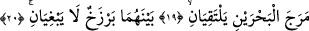

müjde verir. “Şedîdü’l-ıkâb” sözünü duyunca yanar, erir ve kırık bir dille şöyle der:
Gözüm yaş dolu, ciğerim ateş; iki elim bomboş, başımda toprak.
“Zi’t-tavli” hitâbını işitince gönlü şûlelenir ve iftiharla şöyle seslenir:
Benim örtümü taşıyamayan arş ne yapabilir ki?
Ben Senin kazânın hükmünü gönülden çekiyorum.
Ebû Bekr-i Şiblî (k.s.) bir gün savaşçılar gibi hem gidiyor hem de şöyle diyordu:
“Eğer bu yolda yüz binlerce ateşten deniz olsa korkmam, hepsini geçerim.” Ertesi gün
onun nasipsiz biri gibi, “başını öne eğmiş gelmekte olduğunu gördüler. Usul usul şöyle
diyordu: “Senin hükmünden feryad; Senin kahrından zinhar. Ne seninle bana huzur ve
sükûn, ne sensiz işim dirlik düzen bulur. Ne gelmeye cesaretim var ne de kaçmaya. Eğer
geri gelecek olsam bir yer göremiyorum. Kaçacak olsam, yol bilmiyorum.”
Sordular: “Ey Şiblî, dünkü hâlin ne idi, bugünkü hâlin nedir?” Şu cevabı verdi:
“Baykuş tavusu görmeden güzellikten dem vurur. Ancak baykuş baykuştur, tavus da
tavus. “Lâ ilâhe illâ Hû.” Ondan başka ibâdete lâyık bir ilâh yoktur.
Dolayısıyla O’nun emir ve yasaklarına itâat ve teslîmiyete, kendini tam olarak vermek
gerekmektedir. Bütün mahlûkatın âhirette dönüşleri, ne tam bağımsız olarak ne de
ortaklık sûretinde bir başkasına değil, ancak bu yüce zâtadır. O da bütün itâatkâr ve
günahkârlara hak etmiş olduklarının karşılığını orada verecektir.
et-Te’vîlâtü’n-Necmiyye’de şöyle der: Allah Teâlâ, tevbelerini kabul etmek sûretiyle
dostlarının “günahlarını bağışlamakta”dır. Onları samîmî bir şekilde tevbe etmeye
muvaffak kılmak suretiyle “tevbeleri kabul etmekte”dir. Çünkü dostları, O’nun lütuf
sıfatlarının tezâhür ettiği kişilerdir. İnanmayan ve tevbe etmeyenler için O’nun “azâbı
şiddetli”dir. Çünkü O’nun kahır sıfatlarının tezâhür ettiği varlıklar da bu gibi
kimselerdir. Umûmî mânâda tüm varlıklar için O, “lutfu bol olan”dır. Zira tüm varlıkları
yokluktan varlık sahnesine çıkarıp rızıklandıran O’dur.
Yine Cenâb-ı Hak, insanlardan zâlim olanlar için “günahları bağışlayıcı”; orta halli
olanlar için “tevbeleri kabul edici”; müşrik olanlar için “azâbı şiddetli”; hayırda önde
gidenler için ise “lûtfu bol olan”dır.
Yüce Allah’ın rahmetinin ğazabından önde olması O’nun kerîm bir sünneti olduğu
içindir ki burada lütuf sıfatlarını ifâde eden isimleri kahır sıfatlarını ifâde eden
isimlerinden fazla getirilmiştir. Hatta, O’nun âtıfetli bir ihsânı ve merhametli bir lutf u
in’âmı olarak bir tek kahır sıfatı üç lutuf sıfatının arasında zikredilmiştir. Böylece:
“İki denizi birbirine kavuşmak üzere salıvermiştir. Aralarında bir engel vardır,
birbirine geçip karışmazlar.” (er-Rahmân 55/19-20) Yani, Allah böylece, birbiriyle